CODING AGENTS AS PIXEL WORLD MODELS
traex/GPT-6.1-Sol · 0015
点击播放 · 原生 RGB 像素
逐轮保存的候选
回放视频、检查图与代码变化。
每份候选均可单独播放。实际图片检查记录在下方工具轨迹中。
候选 01播放与检查图
点击播放 · 原生 RGB 像素
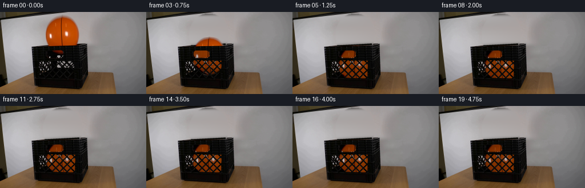
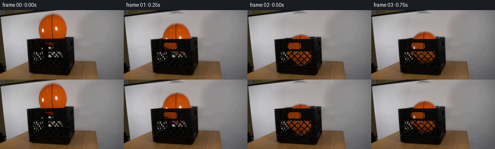
展开代码变化
--- 上一保存版本
+++ 本次保存版本
@@ -0,0 +1,148 @@
+from pathlib import Path
+import numpy as np
+from PIL import Image, ImageDraw
+import cv2
+from scipy.ndimage import gaussian_filter, distance_transform_edt
+from scipy.special import erf
+import artifact_io
+
+ROOT=Path(__file__).resolve().parent
+SRC=np.asarray(Image.open(ROOT/'first_frame.png').convert('RGB')).astype(np.float32)
+H,W=SRC.shape[:2]
+y,x=np.mgrid[:H,:W].astype(float)
+
+# Recover the stationary, gently shaded backdrop behind the released ball.
+background=SRC.copy()
+wall=np.empty_like(SRC)
+for row in range(H):
+ left=SRC[row,66:75].mean(0)
+ right=SRC[row,147:156].mean(0)
+ t=(np.arange(W)-70)/81
+ wall[row]=left[None,:]*(1-t[:,None])+right[None,:]*t[:,None]
+# Smooth the small-scale photographic variation, retaining the vertical shading.
+wall=gaussian_filter(wall,(1.8,.5,0))
+region=((x-109)/35)**2+((y-40)/38)**2 < 1
+region &= (y < 59)
+blend=gaussian_filter(region.astype(float),.75)
+# The rim itself is kept crisp and is never inpainted along its front edge.
+blend *= np.clip((59.4-y)/1.1,0,1)
+background=background*(1-blend[:,:,None])+wall*blend[:,:,None]
+# Reconstruct the narrow rear/top rim where it was obscured by the sphere.
+S=4
+rim=Image.new('RGBA',(W*S,H*S))
+d=ImageDraw.Draw(rim)
+def line(points,fill,width):
+ d.line([(int(a*S),int(b*S)) for a,b in points], fill=fill,width=round(width*S))
+line([(76,59.0),(140,55.7)],(15,14,12,255),1.4)
+line([(79,60.0),(139,57.0)],(7,8,5,255),1.8)
+line([(79,58.4),(140,55.2)],(53,51,45,245),.6)
+rim=np.asarray(rim.resize((W,H),Image.Resampling.LANCZOS)).astype(float)
+rma=rim[:,:,3]/255
+rma *= (x>77)&(x<139)&(y<60)
+background=background*(1-rma[:,:,None])+rim[:,:,:3]*rma[:,:,None]
+# Remove only the orange reflection of the original ball inside the hand hole.
+oldorange=(x>83)&(x<113)&(y>65)&(y<76)&(SRC[:,:,0]>SRC[:,:,1]*1.45)&(SRC[:,:,0]>30)
+a=gaussian_filter(oldorange.astype(float),.65)
+background=background*(1-a[:,:,None])+np.array([10,11,8])*a[:,:,None]
+
+# A full ball sprite: photographed upper hemisphere, with its occluded lower
+# cap continued using reflected surface texture and a gravity-facing shade.
+cy,cx,rx,ry=40.,109.,29.,32.9
+q=np.sqrt(((x-cx+.036*(y-cy))/rx)**2+((y-cy)/ry)**2)
+alpha=.5*(1-erf((q-1)*29/.92/np.sqrt(2)))
+alpha[(y<5)|(y>75)|(x<77)|(x>141)]=0
+# Correct the background mixed into the soft silhouette.
+texture=np.clip((SRC-wall*(1-alpha[:,:,None]))/np.maximum(alpha[:,:,None],.025),0,255)
+# Continue the subtly curving basketball seam around the lower cap.
+def seam(yy):
+ return 107.0+.0039*(yy-27)**2
+sy=np.where(y<=57.3,y,80-y).astype(np.float32)
+sx=(x-np.where(y>57.3,seam(y)-seam(sy),0)).astype(np.float32)
+ref=cv2.remap(texture,sx,sy,cv2.INTER_CUBIC,borderMode=cv2.BORDER_REFLECT)
+shade=1-.30*np.clip((y-57.3)/15.6,0,1)
+ref*=shade[:,:,None]
+texture=np.where((y>57.3)[:,:,None],ref,texture)
+texture=np.clip(texture,0,255).astype(np.float32)
+# Slight pebbling remains subpixel and consistent with the source resolution.
+
+# Foreground openings of the crate; the plastic walls and all lattice ribs
+# remain fixed. An interior ball occludes the distant wall visible through them.
+def polygon_mask(points):
+ im=Image.new('L',(W*S,H*S),0)
+ ImageDraw.Draw(im).polygon([(round(a*S),round(b*S)) for a,b in points],fill=255)
+ return np.asarray(im.resize((W,H),Image.Resampling.LANCZOS)).astype(float)/255
+handle=polygon_mask([(86,67.5),(105.5,67.8),(110,69.8),(110.6,77.7),(107.3,80.2),(88.5,80.4),(84.1,78),(82.8,74.7),(83.2,69.8)])
+aperture=polygon_mask([(67.7,84.3),(131.7,85.8),(130.7,116.5),(69.1,114.9)])
+# The diagonal molded ribs are picked up from their regular geometry, with
+# their original photograph retained wherever a rib is in front of the ball.
+ribs=np.zeros((H,W))
+for b in [-37,-24,-11,2,15,28,41]:
+ dist=np.abs(x-y-b)/np.sqrt(2)
+ ribs=np.maximum(ribs,np.clip((1.5-dist)/.75,0,1))
+for b in [166,179,192,205.5,219,232,245,258]:
+ dist=np.abs(x+y-b)/np.sqrt(2)
+ ribs=np.maximum(ribs,np.clip((1.5-dist)/.75,0,1))
+# At the left edge the second face's lattice is also visible in perspective.
+# These struts are behind the ball, so only the near face persists.
+openings=np.maximum(handle,aperture*(1-ribs))
+openings=np.clip(openings,0,1)
+
+# A damped, elastic vertical drop into the crate at real-time cadence.
+g=630.
+rest=94.0
+initial=40.
+impact=np.sqrt(2*(rest-initial)/g)
+e=.60
+v0=g*impact
+
+def location(t):
+ if t<impact:return initial+.5*g*t*t
+ t-=impact
+ velocity=e*v0
+ for _ in range(20):
+ span=2*velocity/g
+ if t<span:
+ return rest-velocity*t+.5*g*t*t
+ t-=span
+ velocity*=e
+ if velocity<3:return rest
+ return rest
+
+frames=[SRC.astype(np.uint8)]
+for index in range(1,20):
+ t=index/4
+ center=location(t)
+ dx=.7*(1-np.exp(-2*t))
+ theta=.035*(1-np.exp(-2*t))
+ c,s=np.cos(theta),np.sin(theta)
+ # Inverse image-space map into the original photographed ball.
+ xx=x-cx-dx; yy=y-center
+ mapx=(cx+c*xx+s*yy).astype(np.float32)
+ mapy=(cy-s*xx+c*yy).astype(np.float32)
+ rgb=cv2.remap(texture,mapx,mapy,cv2.INTER_CUBIC,borderMode=cv2.BORDER_CONSTANT)
+ ba=cv2.remap(alpha.astype(np.float32),mapx,mapy,cv2.INTER_LINEAR,borderMode=cv2.BORDER_CONSTANT)
+ # The top and front rim occlude the sphere, apart from the openings.
+ front_edge=61.0-.018*(x-57)
+ above=np.clip(front_edge-y-.2,0,1)
+ above*=np.clip((x-56),0,1)*np.clip((153-x),0,1)
+ vis=np.maximum(above,openings)
+ # Interior lighting is dimmer than the unobstructed sphere.
+ interior=np.clip((y-front_edge)/9,0,1)
+ atten=1-.28*interior
+ rgb=rgb*atten[:,:,None]
+ # Keep subtle cast shading immediately adjacent to the rising cap.
+ frame=background.copy()
+ shadow=np.exp(-(((x-cx-dx-2)/31)**2+((y-center-2)/34)**2)*1.8)*.06
+ shadow*=above
+ frame*=1-shadow[:,:,None]
+ comp=ba*vis
+ frame=frame*(1-comp[:,:,None])+rgb*comp[:,:,None]
+ frames.append(np.clip(frame,0,255).astype(np.uint8))
+
+frames=np.stack(frames)
+artifact_io.save(frames,ROOT)
+# Diagnostic enlargement, saved only locally.
+contact=Image.new('RGB',(4*512,3*288),(30,30,30))
+for k,i in enumerate([0,1,2,3,4,5,6,7,8,11,15,19]):
+ contact.paste(Image.fromarray(frames[i]).resize((512,288),Image.Resampling.NEAREST),((k%4)*512,(k//4)*288))
+contact.save(ROOT/'.tmp/contact.png')
候选 02播放与检查图
点击播放 · 原生 RGB 像素

展开代码变化
--- 上一保存版本
+++ 本次保存版本
@@ -22,7 +22,7 @@
# Smooth the small-scale photographic variation, retaining the vertical shading.
wall=gaussian_filter(wall,(1.8,.5,0))
region=((x-109)/35)**2+((y-40)/38)**2 < 1
-region &= (y < 59)
+region &= (y < 59) & (y >= 6)
blend=gaussian_filter(region.astype(float),.75)
# The rim itself is kept crisp and is never inpainted along its front edge.
blend *= np.clip((59.4-y)/1.1,0,1)
@@ -78,12 +78,13 @@
ribs=np.zeros((H,W))
for b in [-37,-24,-11,2,15,28,41]:
dist=np.abs(x-y-b)/np.sqrt(2)
- ribs=np.maximum(ribs,np.clip((1.5-dist)/.75,0,1))
+ ribs=np.maximum(ribs,np.clip((1.2-dist)/.8,0,1))
for b in [166,179,192,205.5,219,232,245,258]:
dist=np.abs(x+y-b)/np.sqrt(2)
- ribs=np.maximum(ribs,np.clip((1.5-dist)/.75,0,1))
+ ribs=np.maximum(ribs,np.clip((1.2-dist)/.8,0,1))
# At the left edge the second face's lattice is also visible in perspective.
# These struts are behind the ball, so only the near face persists.
+ribs=gaussian_filter(ribs,.43)
openings=np.maximum(handle,aperture*(1-ribs))
openings=np.clip(openings,0,1)
@@ -132,6 +133,10 @@
rgb=rgb*atten[:,:,None]
# Keep subtle cast shading immediately adjacent to the rising cap.
frame=background.copy()
+ # The near black ribs are not backlit by the distant background.
+ near_rib=ba*aperture*ribs
+ rib_rgb=np.minimum(SRC,np.array([32.,32.,29.]))
+ frame=frame*(1-near_rib[:,:,None])+rib_rgb*near_rib[:,:,None]
shadow=np.exp(-(((x-cx-dx-2)/31)**2+((y-center-2)/34)**2)*1.8)*.06
shadow*=above
frame*=1-shadow[:,:,None]
候选 03播放与检查图
点击播放 · 原生 RGB 像素

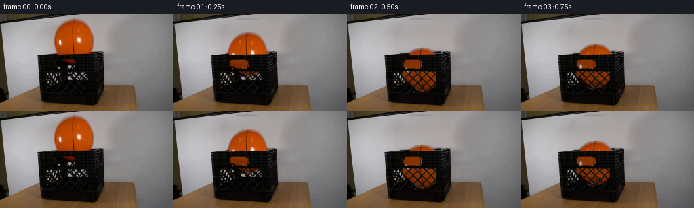
展开代码变化
--- 上一保存版本
+++ 本次保存版本
@@ -21,11 +21,17 @@
wall[row]=left[None,:]*(1-t[:,None])+right[None,:]*t[:,None]
# Smooth the small-scale photographic variation, retaining the vertical shading.
wall=gaussian_filter(wall,(1.8,.5,0))
+for row in range(5,11):
+ left=SRC[row,84:93].mean(0)
+ right=SRC[row,129:141].mean(0)
+ tt=(np.arange(W)-88)/47
+ wall[row]=left[None,:]*(1-tt[:,None])+right[None,:]*tt[:,None]
region=((x-109)/35)**2+((y-40)/38)**2 < 1
-region &= (y < 59) & (y >= 6)
+region &= (y < 59) & (y >= 5)
blend=gaussian_filter(region.astype(float),.75)
# The rim itself is kept crisp and is never inpainted along its front edge.
blend *= np.clip((59.4-y)/1.1,0,1)
+blend[y<5]=0
background=background*(1-blend[:,:,None])+wall*blend[:,:,None]
# Reconstruct the narrow rear/top rim where it was obscured by the sphere.
S=4
可观测工具轨迹
实际执行的命令与返回图片。
命令 1exit 0
/bin/bash -lc "ls -la && cat prompt.txt && printf '\\n---RULES---\\n' && cat GENERATION_RULES.md"
命令 2exit 0
/bin/bash -lc "cat artifact_io.py && python - <<'PY'
from PIL import Image
im=Image.open('first_frame.png');print(im.size);im.resize((1024,576)).save('.tmp/first_large.png')
PY"命令 3exit 0
/bin/bash -lc "python - <<'PY'
from PIL import Image
im=Image.open('first_frame.png'); im.crop((54,54,156,136)).resize((816,656)).save('.tmp/crate.png')
PY"命令 4exit 0
/bin/bash -lc "python - <<'PY'
import importlib.util
for p in ['cv2','numpy','scipy','PIL']:
print(p,importlib.util.find_spec(p) is not None)
from PIL import Image
im=Image.open('first_frame.png');im.crop((50,50,157,132)).resize((856,656),Image.Resampling.NEAREST).save('.tmp/crate_nearest.png')
PY"命令 5exit 0
/bin/bash -lc "python - <<'PY'
from PIL import Image
import numpy as np
im=np.array(Image.open('first_frame.png'))
for y in range(5,83):
m=(im[y,:,0]>im[y,:,1]*1.35)&(im[y,:,0]>80)&(im[y,:,1]<125)&(np.arange(256)>70)&(np.arange(256)<150)
xs=np.where(m)[0]
if len(xs):print(y,xs.min(),xs.max(),len(xs))
PY"命令 6exit 0
/bin/bash -lc "python - <<'PY'
from PIL import Image,ImageDraw
im=Image.open('first_frame.png').resize((1024,576),Image.Resampling.NEAREST)
d=ImageDraw.Draw(im)
for x in range(55,156,5):
d.line((4*x,210,4*x,535),fill=(160,80,80),width=1); d.text((4*x,535),str(x),fill=(255,80,80))
for y in range(55,135,5):
d.line((220,4*y,625,4*y),fill=(160,80,80),width=1);d.text((625,4*y),str(y),fill=(255,80,80))
im.save('.tmp/grid.png')
PY"命令 7exit 0
/bin/bash -lc "python - <<'PY'
from PIL import Image,ImageEnhance
im=Image.open('first_frame.png'); im=ImageEnhance.Brightness(im).enhance(4);im=ImageEnhance.Contrast(im).enhance(.8);im.crop((55,56,143,131)).resize((704,600)).save('.tmp/bright.png')
PY"命令 8exit 0
/bin/bash -lc "python - <<'PY'
from PIL import Image,ImageDraw,ImageEnhance
im=ImageEnhance.Brightness(Image.open('first_frame.png')).enhance(6).resize((1536,864),Image.Resampling.NEAREST)
d=ImageDraw.Draw(im)
for x in range(65,137,5):
d.line((6*x,6*82,6*x,6*118),fill=(160,80,80),width=1); d.text((6*x,6*118),str(x),fill=(255,80,80))
for y in range(85,118,5):
d.line((6*65,6*y,6*136,6*y),fill=(160,80,80),width=1);d.text((6*136,6*y),str(y),fill=(255,80,80))
im.crop((370,480,900,750)).save('.tmp/front_grid.png')
PY"命令 9exit 0
/bin/bash -lc "python - <<'PY'
import numpy as np
from PIL import Image
im=np.array(Image.open('first_frame.png'))
for y in [4,8,20,40,53,55,56,57,58,59,60,61]:
print(y,[(x,tuple(im[y,x])) for x in [65,70,75,78,80,90,110,135,140,145,150,160]])
PY"命令 10exit 0
/bin/bash -lc "python - <<'PY'
from PIL import Image,ImageEnhance,ImageDraw
im=Image.open('first_frame.png');im=ImageEnhance.Brightness(im).enhance(5).resize((2048,1152),Image.Resampling.BICUBIC)
d=ImageDraw.Draw(im)
for x in range(67,135,2):
for y in range(83,118,2):
d.ellipse((x*8-1,y*8-1,x*8+1,y*8+1),fill=(230,80,80))
for x in range(68,135,4):d.text((x*8,118*8),str(x),fill='white')
for y in range(84,118,2):d.text((135*8,y*8),str(y),fill='white')
im.crop((66*8,82*8,141*8,121*8)).save('.tmp/coords.png')
PY"命令 11exit 0
/bin/bash -lc "python - <<'PY'
from PIL import Image
import numpy as np
im=np.array(Image.open('first_frame.png')).mean(2)
for sign in [1,-1]:
vals=[]
for b in range(-60,250):
ps=[]
for y in range(99,115):
x=sign*y+b
if x>=70 and x<=131:ps.append(im[y,x])
if len(ps)>10:vals.append((b,round(np.mean(ps),1)))
print(sign,sorted(vals,key=lambda v:-v[1])[:35])
PY"命令 12exit 0
/bin/bash -lc "cat > generate.py <<'PY'
from pathlib import Path
import numpy as np
from PIL import Image, ImageDraw
import cv2
from scipy.ndimage import gaussian_filter, distance_transform_edt
from scipy.special import erf
import artifact_io
ROOT=Path(__file__).resolve().parent
SRC=np.asarray(Image.open(ROOT/'first_frame.png').convert('RGB')).astype(np.float32)
H,W=SRC.shape[:2]
y,x=np.mgrid[:H,:W].astype(float)
# Recover the stationary, gently shaded backdrop behind the released ball.
background=SRC.copy()
wall=np.empty_like(SRC)
for row in range(H):
left=SRC[row,66:75].mean(0)
right=SRC[row,147:156].mean(0)
t=(np.arange(W)-70)/81
wall[row]=left[None,:]*(1-t[:,None])+right[None,:]*t[:,None]
# Smooth the small-scale photographic variation, retaining the vertical shading.
wall=gaussian_filter(wall,(1.8,.5,0))
region=((x-109)/35)**2+((y-40)/38)**2 < 1
region &= (y < 59)
blend=gaussian_filter(region.astype(float),.75)
# The rim itself is kept crisp and is never inpainted along its front edge.
blend *= np.clip((59.4-y)/1.1,0,1)
background=background*(1-blend[:,:,None])+wall*blend[:,:,None]
# Reconstruct the narrow rear/top rim where it was obscured by the sphere.
S=4
rim=Image.new('RGBA',(W*S,H*S))
d=ImageDraw.Draw(rim)
def line(points,fill,width):
d.line([(int(a*S),int(b*S)) for a,b in points], fill=fill,width=round(width*S))
line([(76,59.0),(140,55.7)],(15,14,12,255),1.4)
line([(79,60.0),(139,57.0)],(7,8,5,255),1.8)
line([(79,58.4),(140,55.2)],(53,51,45,245),.6)
rim=np.asarray(rim.resize((W,H),Image.Resampling.LANCZOS)).astype(float)
rma=rim[:,:,3]/255
rma *= (x>77)&(x<139)&(y<60)
background=background*(1-rma[:,:,None])+rim[:,:,:3]*rma[:,:,None]
# Remove only the orange reflection of the original ball inside the hand hole.
oldorange=(x>83)&(x<113)&(y>65)&(y<76)&(SRC[:,:,0]>SRC[:,:,1]*1.45)&(SRC[:,:,0]>30)
a=gaussian_filter(oldorange.astype(float),.65)
background=background*(1-a[:,:,None])+np.array([10,11,8])*a[:,:,None]
# A full ball sprite: photographed upper hemisphere, with its occluded lower
# cap continued using reflected surface texture and a gravity-facing shade.
cy,cx,rx,ry=40.,109.,29.,32.9
q=np.sqrt(((x-cx+.036*(y-cy))/rx)**2+((y-cy)/ry)**2)
alpha=.5*(1-erf((q-1)*29/.92/np.sqrt(2)))
alpha[(y<5)|(y>75)|(x<77)|(x>141)]=0
# Correct the background mixed into the soft silhouette.
texture=np.clip((SRC-wall*(1-alpha[:,:,None]))/np.maximum(alpha[:,:,None],.025),0,255)
# Continue the subtly curving basketball seam around the lower cap.
def seam(yy):
return 107.0+.0039*(yy-27)**2
sy=np.where(y<=57.3,y,80-y).astype(np.float32)
sx=(x-np.where(y>57.3,seam(y)-seam(sy),0)).astype(np.float32)
ref=cv2.remap(texture,sx,sy,cv2.INTER_CUBIC,borderMode=cv2.BORDER_REFLECT)
shade=1-.30*np.clip((y-57.3)/15.6,0,1)
ref*=shade[:,:,None]
texture=np.where((y>57.3)[:,:,None],ref,texture)
texture=np.clip(texture,0,255).astype(np.float32)
# Slight pebbling remains subpixel and consistent with the source resolution.
# Foreground openings of the crate; the plastic walls and all lattice ribs
# remain fixed. An interior ball occludes the distant wall visible through them.
def polygon_mask(points):
im=Image.new('L',(W*S,H*S),0)
ImageDraw.Draw(im).polygon([(round(a*S),round(b*S)) for a,b in points],fill=255)
return np.asarray(im.resize((W,H),Image.Resampling.LANCZOS)).astype(float)/255
handle=polygon_mask([(86,67.5),(105.5,67.8),(110,69.8),(110.6,77.7),(107.3,80.2),(88.5,80.4),(84.1,78),(82.8,74.7),(83.2,69.8)])
aperture=polygon_mask([(67.7,84.3),(131.7,85.8),(130.7,116.5),(69.1,114.9)])
# The diagonal molded ribs are picked up from their regular geometry, with
# their original photograph retained wherever a rib is in front of the ball.
ribs=np.zeros((H,W))
for b in [-37,-24,-11,2,15,28,41]:
dist=np.abs(x-y-b)/np.sqrt(2)
ribs=np.maximum(ribs,np.clip((1.5-dist)/.75,0,1))
for b in [166,179,192,205.5,219,232,245,258]:
dist=np.abs(x+y-b)/np.sqrt(2)
ribs=np.maximum(ribs,np.clip((1.5-dist)/.75,0,1))
# At the left edge the second face's lattice is also visible in perspective.
# These struts are behind the ball, so only the near face persists.
openings=np.maximum(handle,aperture*(1-ribs))
openings=np.clip(openings,0,1)
# A damped, elastic vertical drop into the crate at real-time cadence.
g=630.
rest=94.0
initial=40.
impact=np.sqrt(2*(rest-initial)/g)
e=.60
v0=g*impact
def location(t):
if t<impact:return initial+.5*g*t*t
t-=impact
velocity=e*v0
for _ in range(20):
span=2*velocity/g
if t<span:
return rest-velocity*t+.5*g*t*t
t-=span
velocity*=e
if velocity<3:return rest
return rest
frames=[SRC.astype(np.uint8)]
for index in range(1,20):
t=index/4
center=location(t)
dx=.7*(1-np.exp(-2*t))
theta=.035*(1-np.exp(-2*t))
c,s=np.cos(theta),np.sin(theta)
# Inverse image-space map into the original photographed ball.
xx=x-cx-dx; yy=y-center
mapx=(cx+c*xx+s*yy).astype(np.float32)
mapy=(cy-s*xx+c*yy).astype(np.float32)
rgb=cv2.remap(texture,mapx,mapy,cv2.INTER_CUBIC,borderMode=cv2.BORDER_CONSTANT)
ba=cv2.remap(alpha.astype(np.float32),mapx,mapy,cv2.INTER_LINEAR,borderMode=cv2.BORDER_CONSTANT)
# The top and front rim occlude the sphere, apart from the openings.
front_edge=61.0-.018*(x-57)
above=np.clip(front_edge-y-.2,0,1)
above*=np.clip((x-56),0,1)*np.clip((153-x),0,1)
vis=np.maximum(above,openings)
# Interior lighting is dimmer than the unobstructed sphere.
interior=np.clip((y-front_edge)/9,0,1)
atten=1-.28*interior
rgb=rgb*atten[:,:,None]
# Keep subtle cast shading immediately adjacent to the rising cap.
frame=background.copy()
shadow=np.exp(-(((x-cx-dx-2)/31)**2+((y-center-2)/34)**2)*1.8)*.06
shadow*=above
frame*=1-shadow[:,:,None]
comp=ba*vis
frame=frame*(1-comp[:,:,None])+rgb*comp[:,:,None]
frames.append(np.clip(frame,0,255).astype(np.uint8))
frames=np.stack(frames)
artifact_io.save(frames,ROOT)
# Diagnostic enlargement, saved only locally.
contact=Image.new('RGB',(4*512,3*288),(30,30,30))
for k,i in enumerate([0,1,2,3,4,5,6,7,8,11,15,19]):
contact.paste(Image.fromarray(frames[i]).resize((512,288),Image.Resampling.NEAREST),((k%4)*512,(k//4)*288))
contact.save(ROOT/'.tmp/contact.png')
PY
python generate.py"命令 13exit 0
/bin/bash -lc "python - <<'PY'
from PIL import Image,ImageEnhance
im=Image.open('frames/19.png');im.resize((1024,576)).save('.tmp/final_large.png'); ImageEnhance.Brightness(im.crop((66,83,133,118))).enhance(4).resize((536,280)).save('.tmp/newlattice.png')
PY"命令 14exit 0
/bin/bash -lc "cp generate.py .tmp/generate_v1.py && python - <<'PY'
p='generate.py'
s=open(p).read().replace('region &= (y < 59)','region &= (y < 59) & (y >= 6)')
s=s.replace('np.clip((1.5-dist)/.75,0,1)','np.clip((1.2-dist)/.8,0,1)')
s=s.replace('openings=np.maximum(handle,aperture*(1-ribs))','ribs=gaussian_filter(ribs,.43)\\nopenings=np.maximum(handle,aperture*(1-ribs))')
s=s.replace('frame=background.copy()','frame=background.copy()\\n # The near black ribs are not backlit by the distant background.\\n near_rib=ba*aperture*ribs\\n rib_rgb=np.minimum(SRC,np.array([32.,32.,29.]))\\n frame=frame*(1-near_rib[:,:,None])+rib_rgb*near_rib[:,:,None]')
open(p,'w').write(s)
PY
python generate.py"命令 15exit 0
/bin/bash -lc "python - <<'PY'
from PIL import Image
Image.open('frames/19.png').resize((1024,576)).save('.tmp/final2.png')
PY"命令 16exit 0
/bin/bash -lc "python - <<'PY'
import numpy as np
from PIL import Image
im=np.array(Image.open('first_frame.png'))
for yy in range(8):
print(yy,[(xx,tuple(im[yy,xx])) for xx in range(75,131,5)])
PY"命令 17exit 0
/bin/bash -lc "python - <<'PY'
p='generate.py';s=open(p).read()
s=s.replace('wall=gaussian_filter(wall,(1.8,.5,0))','wall=gaussian_filter(wall,(1.8,.5,0))\\nfor row in range(5,11):\\n left=SRC[row,84:93].mean(0)\\n right=SRC[row,129:141].mean(0)\\n tt=(np.arange(W)-88)/47\\n wall[row]=left[None,:]*(1-tt[:,None])+right[None,:]*tt[:,None]')
s=s.replace('(y >= 6)','(y >= 5)')
s=s.replace('blend *= np.clip((59.4-y)/1.1,0,1)','blend *= np.clip((59.4-y)/1.1,0,1)\\nblend[y<5]=0')
open(p,'w').write(s)
PY
python generate.py
python - <<'PY'
import numpy as np
from PIL import Image
from pathlib import Path
z=np.load('pixels.npz')['pixels']
a=np.array(Image.open('first_frame.png'))
p=((a[:,:,0].astype(np.uint32)<<16)|(a[:,:,1].astype(np.uint32)<<8)|a[:,:,2].astype(np.uint32))
assert np.array_equal(z[:,:,0],p)
assert z.shape==(144,256,20)
assert len(list(Path('frames').glob('*.png')))==20
print('Verified 20 RGB frames at 256x144; frame 00 exact.')
PY"视觉工具实际返回图片 1
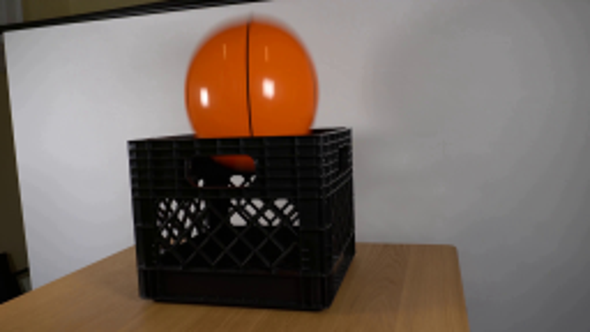
视觉工具实际返回图片 2
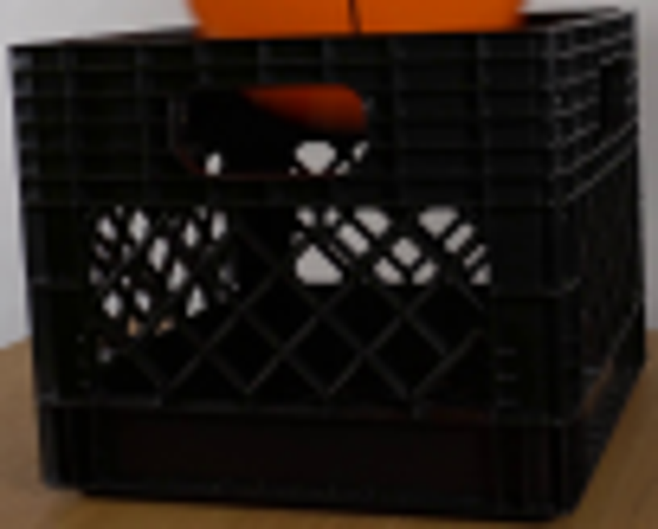
视觉工具实际返回图片 3
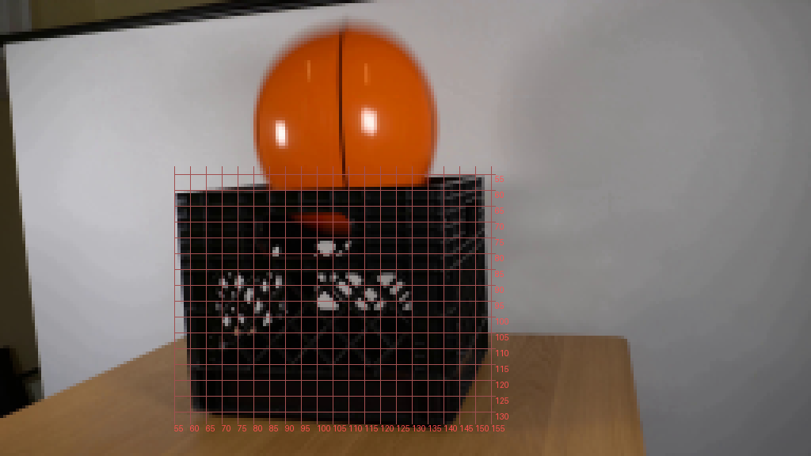
视觉工具实际返回图片 4
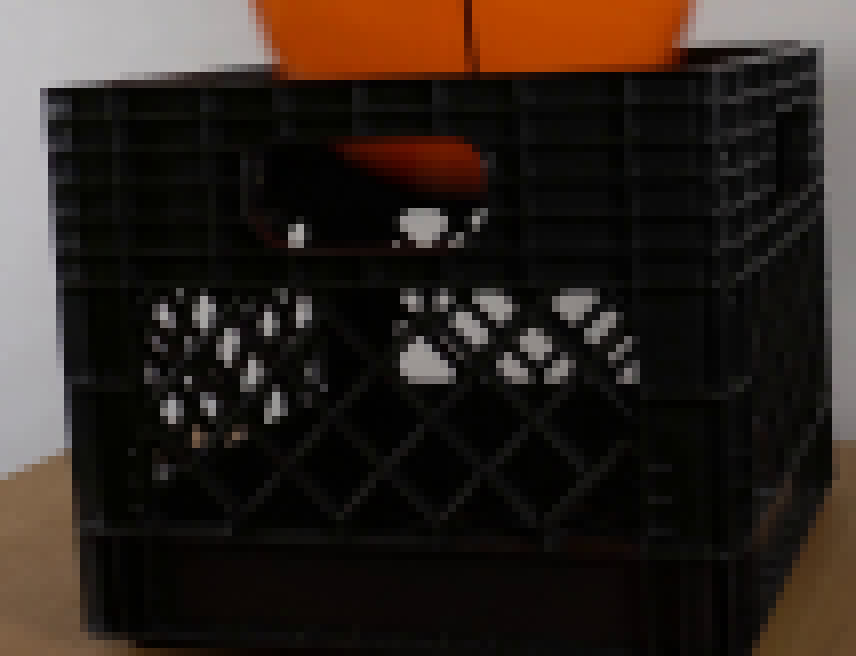
视觉工具实际返回图片 5
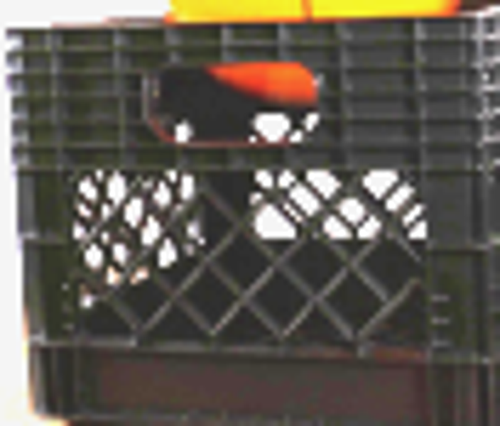
视觉工具实际返回图片 6
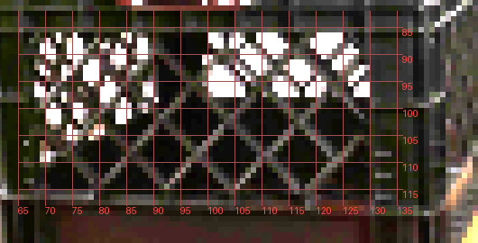
视觉工具实际返回图片 7
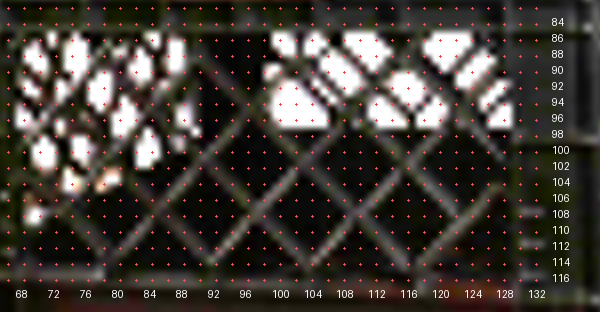
视觉工具实际返回图片 8
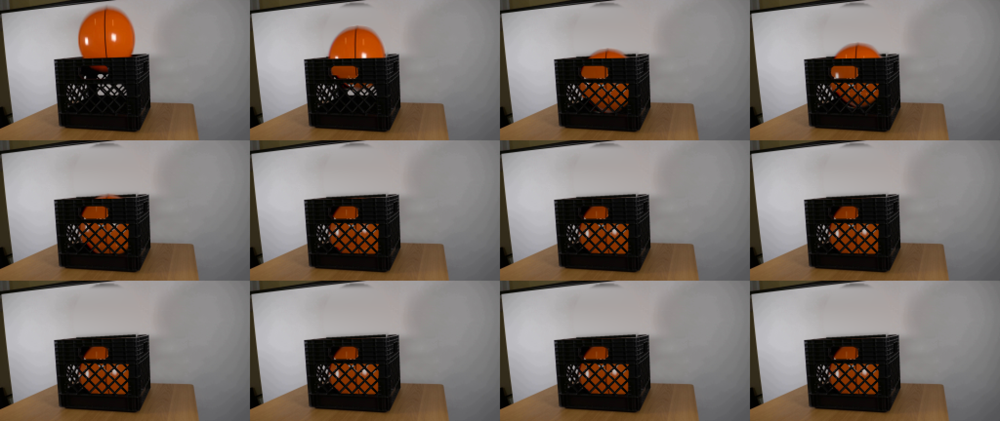
视觉工具实际返回图片 9
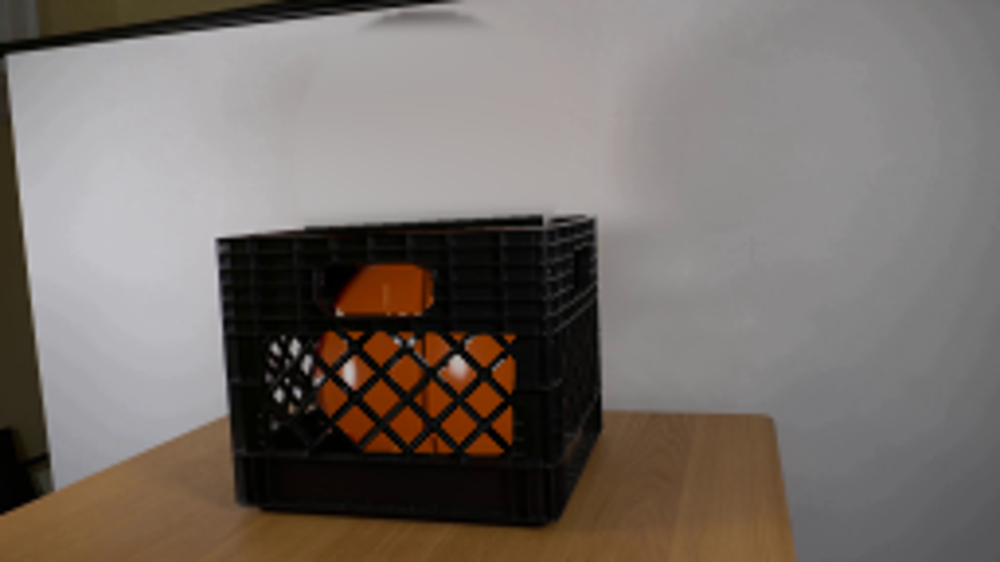
视觉工具实际返回图片 10
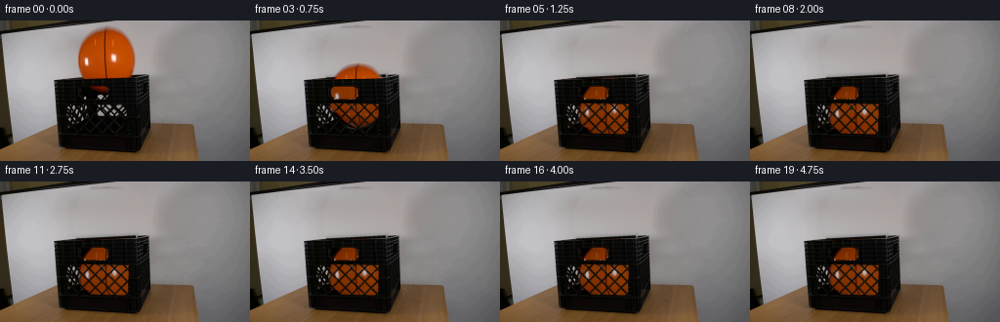
视觉工具实际返回图片 11
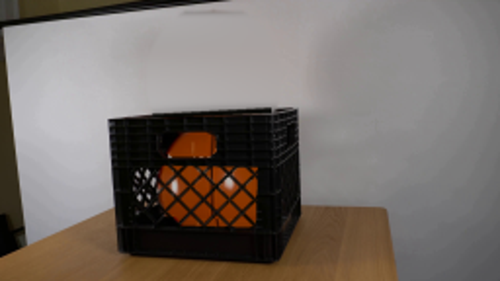
保存候选 4 份；完成命令 17 次；可验证图片返回 11 张。原始 API 响应与完整日志保留在本地。